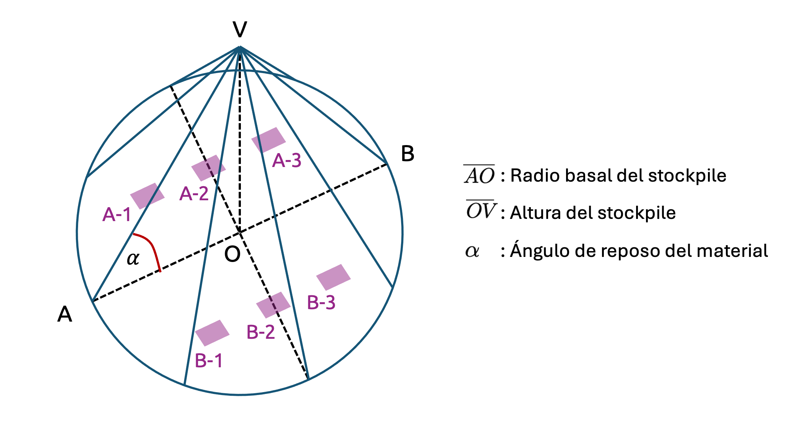

flowchart TB
subgraph DATA["Frontera de datos"]
S["Escenario sintético público"] --> PL["Polars · tabla minuto"]
end
subgraph CONTRACT["Frontera de contratos"]
TOML["Configuración pública"] --> PYD["Pydantic"]
PL --> CHECK["Contrato tabular"]
end
subgraph DOMAIN["Dominio científico"]
PYD --> CA["Estado 3D"]
CHECK --> CA
CA --> REC["Reconciliación"]
end
subgraph ORCH["Orquestación"]
DG["Dagster assets + checks"]
end
subgraph PRODUCT["Producto"]
CA --> VIEW["React · canvas 3D/2D"]
REC --> SVG["SVG de validación"]
end
PL -.->|materializa| DG
CA -.->|materializa| DG
classDef dataNode fill:#e8f2fa,stroke:#2f6b95,color:#17324d,stroke-width:1.5px;
classDef contractNode fill:#f4e8f1,stroke:#7d2b6a,color:#3d1434,stroke-width:1.5px;
classDef domainNode fill:#e8f3f0,stroke:#256b5f,color:#123f37,stroke-width:1.5px;
classDef orchestrationNode fill:#f3ecff,stroke:#6d44b8,color:#36215d,stroke-width:1.5px;
classDef productNode fill:#fff3d9,stroke:#a86800,color:#5b3a00,stroke-width:1.5px;
class S,PL dataNode;
class TOML,PYD,CHECK contractNode;
class CA,REC domainNode;
class DG orchestrationNode;
class VIEW,SVG productNode;
style DATA fill:#f6fafd,stroke:#5b7890,color:#17324d,stroke-width:1.5px;
style CONTRACT fill:#fbf6fa,stroke:#9a668d,color:#3d1434,stroke-width:1.5px;
style DOMAIN fill:#f4faf8,stroke:#5a817a,color:#123f37,stroke-width:1.5px;
style ORCH fill:#faf7ff,stroke:#8065b1,color:#36215d,stroke-width:1.5px;
style PRODUCT fill:#fffbf1,stroke:#b78a3e,color:#5b3a00,stroke-width:1.5px;
linkStyle default stroke:#52606d,stroke-width:1.5px;
1. Problema, alcance y arquitectura
Por qué un acopio conserva memoria y cómo convertir ese punto ciego en un sistema analítico auditable.
Un regulador que funciona como caja negra
Los stockpiles constituyen nodos de gran importancia en las plantas de procesamiento de minerales. Su función es empatar la oferta de mineral triturado proveniente del chancado primario, en un esquema de lotes, con la demanda de molienda, que es de tipo continua y estable en el tiempo. El stockpile actúa pues como un buffer o regulador que permite amortiguar las diferencias de dinámica entre ambos procesos. Sin embargo, esa función amortiguadora es una caja negra: El operador observa la alimentación y la descarga, pero no puede ver qué ocurre dentro del stockpile. La superficie y el inventario son visibles, pero no la distribución espacial de tamaños ni la procedencia temporal del material.
La capacidad amortiguadora de un stockpile suele representarse por medio de un balance de masa simple, que relaciona la alimentación y la descarga con el inventario:
\[ M_{t+\triangle t}=M_{t}+\triangle t\left( q_{\mathrm{in} ,t}-\sum_{j=1}^{J} q_{\mathrm{out} ,j,t} \right) \]
donde \(M_{t}\) es la cantidad de material en el stockpile en el instante \(t\), \(q_{\mathrm{in},t}\) es la tasa de alimentación al stockpile y \(q_{\mathrm{out},j,t}\) es la tasa de descarga desde el stockpile hacia la línea de molienda \(j\) en el instante \(t\). La ecuación establece que el inventario en el siguiente instante de tiempo (\(t+\triangle t\)) es igual al inventario actual más la diferencia entre la alimentación y la suma de las descargas. Esta identidad es necesaria para mantener un control básico del stockpile, pero no proporciona información sobre la distribución espacial del material dentro del stockpile ni sobre las propiedades específicas de cada región.
Un modelo de mezcla “perfecta” (o de tipo black-box) asume que cualquier cantidad de masa extraída del stockpile es representativa de la composición promedio del inventario total. Por otro lado, otros modelos de inventario como FIFO (First In, First Out) y LIFO (Last In, First Out) suponen que el material más antiguo o más reciente es el primero en ser descargado, respectivamente. Sin embargo, ninguno de estos modelos captura adecuadamente la complejidad de un stockpile real, donde la descarga puede ser localizada, existir zonas muertas, avalanchas superficiales y segregación granulométrica radial. Uno de los problemas más frecuentes en el acopio de minerales intermedios es que, si el mineral es de alta densidad, su gravedad específica induce la formación de ratholes o hundimientos en la zona de descarga, lo que provoca que el material más fino y ligero quede en la periferia del stockpile y no sea recuperado eficientemente. Esto puede llevar a una pérdida de eficiencia en la molienda y a un aumento en los costos operativos.
La correcta administración del comportamiento de los minerales acopiados es un problema de negocio, porque la eficiencia de la molienda depende de la distribución de tamaños que efectivamente recibe la molienda, y no de la media histórica de lo que entró al acopio. Por ello, es crucial desarrollar un modelo que pueda estimar la distribución espacial del material dentro del stockpile y su granulometría, para poder tomar decisiones informadas sobre la operación y mantenimiento del sistema.
La pregunta operacional
En este proyecto, queremos responder la siguiente pregunta:
Dadas la secuencia de alimentación, la granulometría de entrada, las descargas por línea y la geometría del stockpile: ¿Qué distribución espacial de material es compatible con esas entradas y qué tamaño característico debería emerger por cada punto de recuperación?
La respuesta es (como no…) un sensor virtual. No observa el interior del stockpile, sino que mantiene un estado latente que busca ser coherente con algunas reglas físicas simplificadas y lo actualiza a medida que llegan nuevas mediciones. Su salida útil no es sólo una variable numérica. Incluye:
- Superficie y altura simuladas del stockpile.
- Inventario y balance de masa.
- Tamaño característico por celda y por columna (ya aclararemos a qué nos referimos con celda y columna).
- Planta y cortes verticales del stockpile simulado.
- Tamaño de mineral descargado por punto y agregado por línea.
- Indicadores de validez, saturación y material no explicado.
- Comparación contra sensores de altura y granulometría.
Alcance del proyecto
Asumiremos que el mineral alimentado al stockpile tiene humedad igual a cero y que no se compacta, permitiendo un flujo libre. El stockpile tendrá una geometría aproximadamente cónica, cuya alimentación se realizará desde un punto alineado con el vértice del cono. La descarga se llevará a cabo desde varios puntos distribuidos alrededor de la base del stockpile en un esquema de tres feeders por línea de molienda, y se permitirá que el material fluya libremente hacia estos puntos de descarga. La superficie del stockpile se relajará automáticamente si la pendiente supera el ángulo de reposo del material, y se implementará un mecanismo de segregación superficial para separar las partículas más finas de las más gruesas.
Este proyecto estará basado parcialmente en los trabajos de Ye, Hilden y Yahyaei (2022, 2023), quienes desarrollaron un modelo de autómata celular tridimensional para simular la formación de pilas de mineral y la segregación de tamaños. Sin embargo, se realizarán algunas modificaciones y simplificaciones para adaptarlo a un contexto pedagógico y de demostración. La secuencia de interacciones por paso se mantendrá, pero se ajustarán los parámetros y las condiciones iniciales para facilitar la comprensión del modelo y su implementación en un entorno de programación más accesible:
- Se alimenta material sobre el stockpile desde un punto central (alineado con el vértice del cono).
- Se descarga material desde varios puntos distribuidos alrededor de la base del stockpile.
- Se propagan los ratholes hacia la superficie para permitir que el material fluya hacia los puntos de descarga.
- Se restablece el ángulo de reposo mediante un flujo superficial, permitiendo que la superficie del stockpile se relaje si la pendiente supera el ángulo de reposo del material.
Lo que no consideramos en este proyecto
El modelo que construiremos no pretende ser una réplica exacta de los modelos de Ye, Hilden y Yahyaei, sino una versión simplificada y adaptada a un contexto pedagógico. Por lo tanto, no se considerarán los siguientes aspectos:
- Compactación del material.
- Cohesión y humedad del mineral.
- Degradación de partículas y conminución dentro del acopio.
- Atascamiento y formación de chimeneas.
- Intervención de equipos móviles y variación local de densidad.
- Resolución de fuerzas, contactos o trayectorias individuales como un método de elementos discretos.
ImportantLa ausencia de un mecanismo no equivale a la ausencia del fenómeno subyacente
Si un equipo móvil redistribuye material y no existe una señal que describa su actividad, el autómata no puede inventarla. La discrepancia aparecerá en altura, inventario o granulometría. Ajustar el ángulo de reposo o la intensidad de segregación para absorber ese residuo puede mejorar una métrica y empeorar la interpretación física. La reconciliación debe utilizarse para formular preguntas, no para esconder mecanismos omitidos.
La redistribución de manterial en un stockpile es frecuente, y suele ser ejecutada por medio de bulldozers. Estos equipos pueden mover grandes cantidades de material, pero su actividad no siempre es registrada por los sensores del sistema. Si el modelo no tiene información sobre la actividad de los bulldozers, no podrá simular correctamente la redistribución del material y, por lo tanto, no podrá predecir con precisión la distribución espacial del material dentro del stockpile. Esto puede llevar a errores en la estimación de la granulometría y en la planificación de la operación de molienda.
Del artículo a la réplica
El trabajo de Ye, Hilden y Yahyaei (2022, 2023) proporciona una base sólida para la simulación de stockpiles mediante autómatas celulares tridimensionales. Sin embargo, nuestra réplica se centra en la comprensión pedagógica y la demostración de conceptos clave, por lo que se han realizado simplificaciones y adaptaciones. El primer artículo se enfoca en la simulación de la segregación de tamaños y la calibración del modelo con datos de laboratorio, mientras que el segundo artículo aborda la validación industrial y la simulación de mecanismos dinámicos de descarga y segregación de trayectorias. Nuestra réplica conserva las ideas estructurales de estos trabajos, pero utiliza un lenguaje de programación diferente del empleado en el trabajo original (Python para el análisis y procesamiento de datos, y TypeScript para la construcción de un reporte dinámico). La edición pública utiliza un escenario sintético diseñado para conservar detenciones, desfases y transitorios industriales verosímiles.
En la siguiente tabla se resumen las diferencias metodológicas entre los artículos originales y nuestra réplica:
| Dimensión | Referencia metodológica | Réplica del blog |
|---|---|---|
| Lenguaje utilizado. | MATLAB + C++. | Python + TypeScript. |
| Estado espacial. | Retícula tridimensional continua. | Arreglo denso de Numpy. |
| Datos. | Laboratorio e industriales. | Escenario sintético determinista con calendario ficticio. |
| Transformación tabular. | No es el foco. | Polars para gestión de datos. |
| Contratos. | Parámetros del modelo. | Pydantic estricto e inmutable. |
| Orquestación. | No es el foco. | Activos y checks de Dagster. |
| Producto. | Resultados científicos. | Visor React con canvas y SVG. |
Arquitectura por capas
El proyecto se organiza en capas que reflejan la separación de responsabilidades y la modularidad del sistema. Cada capa tiene un propósito específico y se comunica con las demás a través de interfaces bien definidas. La Figura 1 ilustra esta arquitectura y permite distinguir tanto las dependencias científicas como las materializaciones observables por la capa de orquestación.
La arquitectura por capas permite mantener la independencia entre el dominio científico y la orquestación, así como entre los datos y los contratos. Cada capa puede evolucionar de manera independiente, siempre que se respeten las interfaces definidas. Esto facilita la prueba, el mantenimiento y la extensión del sistema.
Respecto de la lógica de naturaleza científica, el proyecto se centra en la simulación de la distribución espacial del material dentro del stockpile y su granulometría, utilizando un modelo de autómata celular tridimensional. La implementación del modelo se realiza en Python, utilizando bibliotecas como Numpy para el manejo de arreglos densos y Polars para la gestión de datos tabulares. La configuración del sistema se realiza mediante archivos toml, que son validados por Pydantic para garantizar la coherencia y consistencia de los parámetros del modelo.
Usamos la librería Dagster para la orquestación de los activos y la validación de los contratos, lo que permite mantener un registro del linaje de los datos y garantizar que las transformaciones se realicen de manera correcta. La visualización de los resultados se realiza mediante una aplicación web construida con React, que permite interactuar con el modelo y explorar la distribución espacial del material dentro del stockpile.
NoteReact y Dagster
Hemos mencionado varios recursos que no son estrictamente propios del dominio de la ciencia de datos: Dagster y React, por lo que es justo comentar brevemente qué hacen y por qué los usamos.
Dagster es un orquestador de pipelines de datos. Permite definir activos, que son unidades de trabajo que producen o transforman datos, y checks, que son pruebas que verifican la validez de los datos y las transformaciones. Dagster registra el linaje de los datos, lo que facilita la auditoría y el seguimiento de los cambios en el sistema. En cierta medida, se trata de un framework de pruebas y documentación para la ciencia de datos, que permite mantener la coherencia y consistencia del sistema a lo largo del tiempo, de manera similar a como lo hemos hecho con Kedro, pero con un enfoque más moderno y flexible. De hecho, Dagster es una de las herramientas que más se acercan a un framework de ingeniería de software para la ciencia de datos, y su uso en este proyecto permite mantener una separación clara entre el dominio científico y la orquestación de los activos y las pruebas.
React, por otro lado, es una biblioteca de JavaScript para construir interfaces de usuario interactivas. Permite crear componentes reutilizables y gestionar el estado de la aplicación de manera eficiente. En este proyecto, React se utiliza para construir la interfaz web que permite visualizar y explorar los resultados del modelo de autómata celular tridimensional, incluyendo la distribución espacial del material dentro del stockpile y su granulometría. La elección de React se debe a su popularidad, flexibilidad y capacidad para manejar aplicaciones web complejas de manera eficiente.
Contratos de validez de este proyecto
Al ejecutar este proyecto, la corrida completa puede terminar sin lanzar una excepción y aun así ser científicamente inválida. Debido a ello, distinguimos cuatro niveles de contratos de validez:
- Contrato de software: Subconjunto del proyecto que consiste en tipos, formas y rangos que pueden ejecutarse sin errores.
- Invariantes del dominio: Propiedades físicas que deben permanecer acotadas, como masa, llenado y granulometría.
- Validez geométrica: El stockpile no toca el borde ni supera el techo de la grilla, y las celdas permanecen dentro de los límites definidos.
- Validez empírica: La altura y la granulometría simuladas son compatibles con mediciones externas, y las discrepancias se encuentran dentro de los límites de error aceptables.
Cada uno de estos niveles de validez es independiente y no se sustituyen entre sí. Un asset check verde para el esquema no certifica la física; un error cuadrático medio con magnitud aceptable no demuestra que el mecanismo sea correcto; y una visualización convincente no reemplaza el balance de masa. Por lo tanto, es importante evaluar cada nivel de validez por separado y asegurarse de que todos los contratos se cumplan para garantizar la validez científica del proyecto.
Sobre los datos sintéticos y la confidencialidad
El proyecto no publica tags, fechas, nombres de equipos ni coordenadas de una instalación real. La ventana pública es ficticia y utiliza exclusivamente un calendario, una geometría, señales y nomenclaturas pedagógicas. Las líneas y equipos adoptan nombres genéricos A-1 a B-3 para que la discusión se concentre en el comportamiento del autómata y no en una faena particular.
El proyecto incluye pruebas automáticas que verifican la coherencia de estas transformaciones, la fecha futura, el factor vertical y la ausencia de identificadores restringidos en el runtime publicable. Esta desidentificación no debe confundirse con privacidad formal: una transformación determinista conserva la firma temporal relativa y podría ser reconocible para alguien que ya posea la historia de origen. Por esa razón, el artefacto se presenta como un caso industrial anonimizado con fines pedagógicos, no como un conjunto sintético ni como una liberación apta para reutilización operacional.
Contexto operacional
En la Figura 2 se muestra un esquema del stockpile que deseamos modelar. La alimentación se realiza desde un punto central alineado con el vértice \(V\) del cono, mientras que la descarga se lleva a cabo desde varios puntos distribuidos alrededor de la base del stockpile. La geometría del stockpile se define por el radio basal \(\overline{AO}\) y la altura \(\overline{OV}\), mientras que el ángulo de reposo del mineral se denota como \(\alpha\). La situación geométrica de los feeders que alimentan a la molienda se destaca en morado, indicando la ubicación de tres feeders para cada línea de molienda.

Supongamos un intervalo de tiempo de quince minutos. Durante los primeros minutos, la alimentación supera a la descarga y la superficie del stockpile crece. Luego, se activa un alimentador bajo la línea A, lo que provoca que la balanza de alimentación y la de descarga cierren casi perfectamente. Sin embargo, esto no nos dice qué región interna entregó el material ni qué tamaño de partícula domina la descarga. El operador observa señales parciales, como caudales de correas, altura superficial, estado de alimentadores y muestras granulométricas tomadas aguas arriba o aguas abajo. El interior completo sigue oculto, lo que justifica el uso de un sensor virtual para estimar un estado latente que ningún instrumento mide de manera exhaustiva.
Conforme esta situación, el autómata celular tridimensional simula la evolución del stockpile paso a paso, aplicando reglas físicas simplificadas para actualizar el estado latente y generar predicciones sobre la distribución espacial del material y su granulometría. Cada paso de simulación representa un intervalo de tiempo discreto, durante el cual se realizan las siguientes acciones:
- Convertir el caudal de entrada en un pequeño volumen de material.
- Depositar ese volumen en una posición espacial.
- Permitir que la pendiente se relaje si supera el ángulo \(\alpha\) admisible.
- Extraer volumen desde los alimentadores activos.
- Propagar el vacío creado por la extracción.
- Comparar altura y granulometría simuladas con observaciones externas.
Cada uno de los verbos que dominan los pasos anteriores corresponde a una regla diferente que define cómo se actualiza el estado del stockpile en función de las entradas y las condiciones actuales. Estas reglas se implementan de manera modular, lo que permite mantener la claridad y la audibilidad del código. Si todas las reglas se encapsularan dentro de una única función, digamos simulate(), el programa podría ejecutarse correctamente, pero perdería transparencia y sería más difícil de auditar. La arquitectura del proyecto conserva estas fronteras entre las reglas porque también representan fronteras del fenómeno físico que se está modelando.
Estado, entradas, parámetros y observaciones
A fin de mantener la claridad conceptual, conviene distinguir entre cuatro tipos de cantidad que intervienen en el modelo:
| Categoría | Ejemplo | ¿Cambia en cada paso? | ¿Se mide directamente? |
|---|---|---|---|
| Estado. | Nivel de llenado y percentil de tamaño \(P_{80}\) de cada celda. | Sí. | No, salvo observaciones parciales. |
| Entrada o control. | Flujo de alimentación y descarga: | Sí. | Sí, con error y disponibilidad limitada. |
| Parámetro. | Densidad aparente, ángulo de reposo. | Normalmente no. | Se estima mediante ensayos o calibración. |
| Observación. | Altura medida, Percentil de tamaño \(P_{80}\) de una línea. | Sí. | Sí, pero en una ubicación y escala determinadas. |
Esta tabla resume la relación entre el estado del stockpile, las entradas de alimentación y descarga, los parámetros físicos del material y las observaciones disponibles. El estado representa la información latente que el modelo busca estimar, mientras que las entradas y observaciones son los datos que se utilizan para actualizar y validar el estado. Los parámetros físicos son constantes que definen el comportamiento del material y deben ser conocidos o estimados previamente.
Esta separación evita un error frecuente: Usar una observación como si fuera el estado. Una medición de altura en la corona no define la forma completa; una muestra de \(P_{80}\) en una correa no determina la granulometría de todas las celdas. El modelo permite realizar una traducción entre ambas capas, pero no las vuelve equivalentes.
¿Por qué un balance perfectamente mezclado no alcanza?
Supongamos un stockpile con una capacidad de 1000 t y un \(P_{80}\) promedio de 5 pulgadas. Si se alimentan 100 t con un \(P_{80}\) de 8 pulgadas y se descargan 100 t, un balance de mezcla perfecta puede mantener el inventario y actualizar una única propiedad promedio. Sin embargo, dos historias espaciales compatibles con ese balance pueden producir descargas distintas. Por ejemplo:
- El material grueso recién alimentado rueda hacia la periferia y una descarga periférica lo recupera rápidamente.
- El mismo material queda lejos del alimentador activo y la descarga continúa extrayendo material fino antiguo.
El inventario agregado es idéntico, pero la respuesta operacional no. El autómata agrega precisamente la memoria espacial que falta: Posición, estratificación y conectividad local.
NoteModelo útil no significa réplica literal
El propósito no es reconstruir la posición de cada “elemento” de roca, sino que buscamos conservar las estructuras espaciales que cambian una decisión operacional debido a la mezcla de mineral que ocurre en el stockpile: Superficie, zonas activas de flujo, ratholes, distribución de tamaños y procedencia temporal. Toda variable que no aporte a esas preguntas debe justificar su costo.
De la pregunta al contrato computacional
En términos pedagógicos, el proyecto se puede entender como una cadena de compromisos que vincula la pregunta operacional con el producto final. Cada paso de la cadena representa un nivel de abstracción y una responsabilidad específica en el proceso de modelado y simulación del stockpile. La siguiente expresión ilustra esta cadena de compromisos:
\[ \text{pregunta}\rightarrow\text{estado}\rightarrow\text{reglas}\rightarrow\text{datos}\rightarrow\text{evidencia}\rightarrow\text{producto}. \]
Si la correspondiente pregunta operacional cambia, también puede cambiar el estado necesario. Por ejemplo, para un inventario basta un escalar que represente la cantidad total de material en el stockpile. Para estimar la altura del stockpile, necesitamos información sobre la superficie y la geometría del mismo. Para determinar la granulometría por línea de molienda, necesitamos información sobre la estructura interna del stockpile y la descarga localizada. Para un control en línea más avanzado, necesitaríamos además información sobre latencia, disponibilidad y una política explícita ante datos faltantes.
El proyecto publicado en este blog se centra en la pregunta operacional que busca estimar la distribución espacial del material dentro del stockpile y su granulometría, utilizando un modelo de autómata celular tridimensional. La cadena de compromisos establece cómo se relacionan las diferentes capas del proyecto, desde la pregunta inicial hasta el producto final, pasando por el estado del stockpile, las reglas de actualización, los datos sintéticos y la evidencia obtenida a partir de las simulaciones. A nivel programático, cada capa se implementa mediante funciones y clases que encapsulan la lógica correspondiente, permitiendo mantener la modularidad y la claridad del código: Pydantic impide configuraciones incoherentes, Polars convierte eventos temporales, Numpy mantiene el estado denso de la representatividad de cada celda en la retícula que constituye el stockpile, Dagster registra el linaje de datos que representa al DAG completo del proyecto, y el visor convierte estados en una representación discutible por un ser humano.
← Volver al proyecto · Siguiente: Fundamentos del autómata →